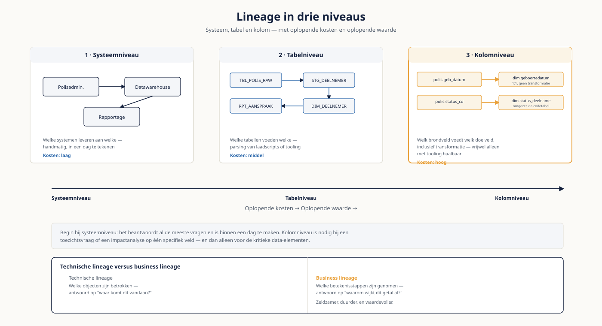

Deel 13 — Metadata, begrippenkader en catalogus
Niveau 2 — Praktijk · Reader
Voorbereiding, geen vervanging
Deze cursusmap is onafhankelijk ontwikkeld door Ductus B.V. Ductus is niet gelieerd aan, geaccrediteerd door of goedgekeurd door DAMA International, IIBA, IAPP, de EDM Association of Microsoft.
Dit materiaal bereidt voor op de genoemde examens en vervangt het officiële examenmateriaal niet. Bodies of knowledge, handboeken en examenblueprints worden hier niet gereproduceerd; deelnemers schaffen die bronnen zelf aan.
Alle genoemde merken zijn eigendom van hun respectieve houders. Examengegevens gecontroleerd in augustus 2026 — verifieer vóór inschrijving bij de bron.
1. Waar dit deel over gaat
Meridiaan heeft een begrippenlijst met vierhonderd termen. Niemand is er eigenaar van, de laatste wijziging dateert van veertien maanden geleden, en er zijn vier definities van "actieve deelnemer" in omloop. Dat is geen bijzondere situatie — het is de normale uitgangssituatie, en zij verklaart waarom catalogusprogramma's zo vaak stranden.
Dit deel gaat over de drie instrumenten van metadata — begrippenkader, catalogus en lineage — en vooral over de vraag waarom ze werken of niet. Het antwoord is zelden technisch. Een catalogus vullen is een project; een catalogus laten gebruiken is een gedragsvraagstuk, en dat is waar de meeste programma's hun geld verliezen.
Leerdoelen
- Je onderscheidt de vier soorten metadata en het verschil tussen passieve en actieve metadata.
- Je schrijft definities die standhouden onder aanval, en herkent de vijf soorten slechte definities.
- Je ontwerpt een begripsgovernanceproces van aanvraag tot publicatie.
- Je reconstrueert lineage en benoemt op welk niveau je die vastlegt.
- Je onderscheidt taxonomie, ontologie en semantische laag.
- Je stelt selectiecriteria op voor catalogustooling en herkent de criteria die er niet toe doen.
- Je meet adoptie in plaats van vulling.
2. Vier soorten metadata, verdiept
| Soort | Beschrijft | Wie levert | Verandert |
|---|---|---|---|
| Business | Betekenis, definitie, eigenaar, gebruik | Business steward, data owner | Zelden — en elke wijziging is een besluit |
| Technisch | Structuur, datatypes, sleutels, relaties | Automatisch uit de bron | Bij elke systeemwijziging |
| Operationeel | Draaitijden, volumes, fouten, doorlooptijden | Automatisch uit de uitvoering | Continu |
| Governance | Classificatie, bewaartermijn, toegangsregime | Data owner en security | Bij beleidswijziging of herbeoordeling |
Passief en actief
Passieve metadata beschrijft; actieve metadata doet iets. Een classificatie die alleen in de catalogus staat, is passief. Dezelfde classificatie die automatisch het toegangsregime in het platform bepaalt, is actief.
Het onderscheid is belangrijker dan het klinkt. Passieve metadata veroudert, omdat niemand merkt dat hij niet klopt. Actieve metadata blijft actueel, omdat een fout meteen zichtbaar wordt: iemand krijgt geen toegang, of krijgt toegang die hij niet hoort te hebben. Wie metadata duurzaam wil houden, zoekt naar toepassingen die hem actief maken.
De vuistregel
Metadata die nergens iets aanstuurt, wordt binnen twee jaar onbetrouwbaar. Vraag bij elk metadataveld dat je wilt vastleggen: wat gebeurt er als dit niet klopt? Is het antwoord "niets", dan is dat veld een onderhoudslast zonder opbrengst.
3. Definities schrijven
Een definitie is een besluit in tekstvorm. Zij bepaalt wie meetelt, wat er wordt gerapporteerd en waar de grens ligt — en juist daarom is zij zelden een taalkwestie en meestal een belangenkwestie.
Anatomie van een bruikbare definitie
- Eén zin die het begrip afbakent, in bedrijfstaal en zonder verwijzing naar systemen.
- Een expliciete insluiting: welke gevallen vallen er zeker onder?
- Een expliciete uitsluiting: welke gevallen vallen er zeker níét onder? Dit is het onderdeel dat het vaakst ontbreekt en dat het meeste voorkomt.
- Het peilmoment, waar dat relevant is: geldt het op een datum, over een periode, of op het moment van bevragen?
- De eigenaar en de datum van vaststelling.
Vijf soorten slechte definities
| Soort | Voorbeeld | Waarom het faalt |
|---|---|---|
| Circulair | "Een actieve deelnemer is een deelnemer die actief is" | Verplaatst de vraag zonder hem te beantwoorden |
| Technisch | "Deelnemers met status = A in tabel DLNM" | Verandert bij elke systeemmigratie en is voor de business onleesbaar |
| Verenigend | "Een deelnemer die opbouwt of premievrij is of recent was aangesloten" | Probeert alle bestaande varianten te verzoenen en beslecht niets |
| Onvolledig | "Een deelnemer die pensioen opbouwt" | Zonder peilmoment en zonder uitsluitingen blijft de discussie open |
| Ongedateerd | Een correcte definitie zonder eigenaar of datum | Niet te onderhouden en niet te betwisten; niemand weet wat er gold |
De verenigende definitie is de gevaarlijkste, omdat hij op consensus lijkt. Een definitie kiest. Wie alle vier de bestaande varianten van "actieve deelnemer" in één zin probeert onder te brengen, produceert een begrip dat niemand kan gebruiken en waarmee de vier varianten gewoon blijven bestaan.
4. Begripsgovernance
Definities schrijven is het makkelijke deel. Ze vaststellen, publiceren en actueel houden is waar het misgaat. Dat vraagt een proces — en dat proces hoort in BPMN, zoals in deel 16 wordt uitgewerkt.
| Stap | Wie | Doorlooptijd | Resultaat |
|---|---|---|---|
| Aanvraag | Iedere medewerker | direct | Geregistreerde aanvraag met aanleiding |
| Opstellen concept | Business steward | 5 werkdagen | Conceptdefinitie met in- en uitsluitingen |
| Impactanalyse | Technical steward en architect | 5 werkdagen | Overzicht van geraakte rapportages, koppelvlakken en modellen |
| Besluit | Domeinraad | 5 werkdagen | Vastgestelde definitie met ingangsdatum |
| Publicatie | Catalogusbeheer | 2 werkdagen | Gepubliceerd met versienummer |
| Communicatie | Business steward | 2 werkdagen | Bekende afnemers geïnformeerd |
Vijftien tot twintig werkdagen dus. Dat is voor Meridiaan relevant: de DNB-termijn is vier maanden, en de definitiediscussie moet daarbinnen worden beslecht. Met dit proces kan dat — mits de domeinraad daadwerkelijk beslist en niet doorverwijst.
De stap die altijd wordt overgeslagen
Communicatie aan bekende afnemers. Een gewijzigde definitie die niet wordt gecommuniceerd, produceert precies het probleem dat je wilde oplossen: drie rapportages die uiteenlopen, nu omdat één ervan de oude definitie bleef gebruiken. Dat is erger dan de uitgangssituatie, want het lijkt opgelost.
5. Lineage
Lineage beschrijft het pad van bron naar gebruik. Er zijn drie niveaus, met sterk oplopende kosten en oplopende waarde.
| Niveau | Wat je vastlegt | Hoe je het verzamelt | Kosten |
|---|---|---|---|
| Systeemniveau | Welke systemen leveren aan welke | Handmatig, in een dag te tekenen | Laag |
| Tabelniveau | Welke tabellen voeden welke | Parsing van laadscripts of tooling | Middel |
| Kolomniveau | Welk brondveld voedt welk doelveld, inclusief transformatie | Vrijwel alleen met tooling haalbaar | Hoog |
De verleiding is om meteen naar kolomniveau te willen. Doe dat niet. Systeemniveau beantwoordt al de meeste vragen die in de praktijk gesteld worden, en het is binnen een dag te maken. Kolomniveau is nodig bij een toezichtsvraag of bij een impactanalyse op één specifiek veld — en dan alleen voor de kritieke data-elementen.
Technisch en business lineage
Technische lineage laat zien welke objecten betrokken zijn. Business lineage laat zien welke betekenisstappen zijn genomen: waar is gefilterd, waar is omgerekend, waar is een definitie toegepast. Die tweede is zeldzamer, duurder en waardevoller — het is het antwoord op "waarom wijkt dit getal af" in plaats van op "waar komt het vandaan".

6. Taxonomie, ontologie, semantische laag
| Begrip | Wat het is | Voorbeeld |
|---|---|---|
| Taxonomie | Een hiërarchische indeling in categorieën | Datadomeinen met daaronder subdomeinen |
| Ontologie | Begrippen met hun onderlinge relaties, formeel vastgelegd | "Een Deelname verbindt een Deelnemer met een Regeling" |
| Semantische laag | De vertaling van bedrijfsbegrippen naar technische velden in de rapportageomgeving | "Actieve deelnemer" als herbruikbare berekening |
De semantische laag is voor jouw praktijk de belangrijkste van de drie, omdat hij de plek is waar het begrippenkader daadwerkelijk werkt. Een definitie die alleen in de catalogus staat, is passief. Dezelfde definitie als berekening in de semantische laag is actief: iedereen die de maat gebruikt, gebruikt automatisch de vastgestelde definitie. Dat is de meest effectieve maatregel tegen uiteenlopende rapportages die er bestaat.
7. Catalogustooling
| Tool | Kenmerk | Let op |
|---|---|---|
| Collibra | Sterk in governance-workflow en begripsbeheer | Vraagt inrichting en beheer; loont pas bij schaal |
| Microsoft Purview | Nauw geïntegreerd met het Microsoft-landschap | Buiten dat landschap minder sterk |
| Alation | Sterk in zoeken en in gebruikersadoptie | Governance-workflow is lichter |
| DataHub | Open source, actieve gemeenschap, flexibel | Eigen beheer en ontwikkelcapaciteit nodig |
| OpenMetadata | Open source, brede connectoren, snel te starten | Jonger; beoordeel de volwassenheid per onderdeel |
Criteria die ertoe doen
- Aansluiting op het bestaande landschap. Een connector die er niet is, bouw je zelf — en dat is zelden begroot.
- Ondersteuning van het begripsgovernanceproces dat je in hoofdstuk 4 hebt ontworpen. Als de tool jouw proces niet aankan, verandert het proces zich naar de tool.
- Zoekervaring voor de gelegenheidsgebruiker. Wie twee keer per maand iets opzoekt, geeft het op bij een moeizame zoekfunctie.
- Beheerlast: hoeveel fte kost het draaiende houden?
- Exporteerbaarheid. Je wilt over vijf jaar kunnen overstappen zonder alles opnieuw te doen.
Criteria die er niet toe doen
- Het aantal functies. Je gebruikt er een fractie van, en de rest is beheerlast.
- De positie in analistenrapporten, tenzij die aansluit op jouw criteria.
- De demo. Elke tool demonstreert goed met voorbereide data.
Waarom catalogusprogramma's stranden
Bijna nooit op de tool. Ze stranden doordat de catalogus wordt gevuld zonder dat iemand hem hoeft te gebruiken, en zonder dat de inhoud ergens iets aanstuurt. Na achttien maanden is de vulling verouderd, wordt er niet meer in gezocht, en heet de tool het probleem. Begin daarom klein: vijftig begrippen met eigenaar, gekoppeld aan de semantische laag, verslaat vierduizend zonder eigenaar.
8. Adoptie meten
| Indicator | Wat het zegt | Signaalwaarde |
|---|---|---|
| Aandeel kritieke begrippen met een vastgestelde definitie | Dekking op wat ertoe doet | Onder 80% is de basis niet af |
| Aandeel begrippen met een aanwijsbare eigenaar | Of onderhoud belegd is | Zonder eigenaar veroudert het begrip vanzelf |
| Aantal raadplegingen per maand, per gebruikersgroep | Of de catalogus wordt gebruikt | Daling drie maanden op rij is een alarmsignaal |
| Doorlooptijd van een definitiewijziging | Of het proces werkt | Boven de 25 werkdagen wordt het proces omzeild |
| Aantal definitiewijzigingen per kwartaal | Of het kader leeft | Nul wijzigingen betekent zelden dat alles klopt |
Meet vulling niet als succes. Het aantal opgenomen datasets zegt niets over gebruik, en het is de indicator die het makkelijkst te manipuleren valt door een import te draaien.
9. Vijf valkuilen
- Beginnen met alles inventariseren in plaats van met de kritieke begrippen.
- Definities schrijven die verenigen in plaats van kiezen.
- De communicatiestap in het wijzigingsproces overslaan.
- Meteen naar lineage op kolomniveau willen.
- Vulling rapporteren als adoptie.
10. Examenrelevantie
Dit deel is de kern van de voorbereiding op het CDMP-specialistexamen Metadata Management. De terminologie volgt de DAMA-DMBOK2 Revised Edition.
Aandachtspunten
- De vier soorten metadata en wie ze levert.
- Het verschil tussen een business glossary, een datacatalogus en een data dictionary — dat laatste paar wordt op het examen regelmatig verward.
- Lineage: technisch versus business, en de drie niveaus van vastlegging.
- Taxonomie, ontologie en semantische laag uit elkaar houden.
- Metadata als voorwaarde voor de verantwoordingsplicht.
- Engels: metadata repository, business glossary, data dictionary, lineage, provenance, taxonomy, ontology, active metadata.
Studiemateriaal bij dit deel
Kernbron: het hoofdstuk over metadata management in de DAMA-DMBOK2 Revised Edition — tijdens het examen het enige toegestane hulpmiddel, in papier óf digitaal.
Voor de tooling: de productdocumentatie van de leveranciers zelf. Analistenrapporten zijn nuttig als overzicht en ongeschikt als selectiecriterium.
Examenopzet en de actuele lijst met specialistexamens: cdmp.info/exams en dama.org/certification.
Dit materiaal reproduceert geen van deze bronnen en vervangt ze niet.